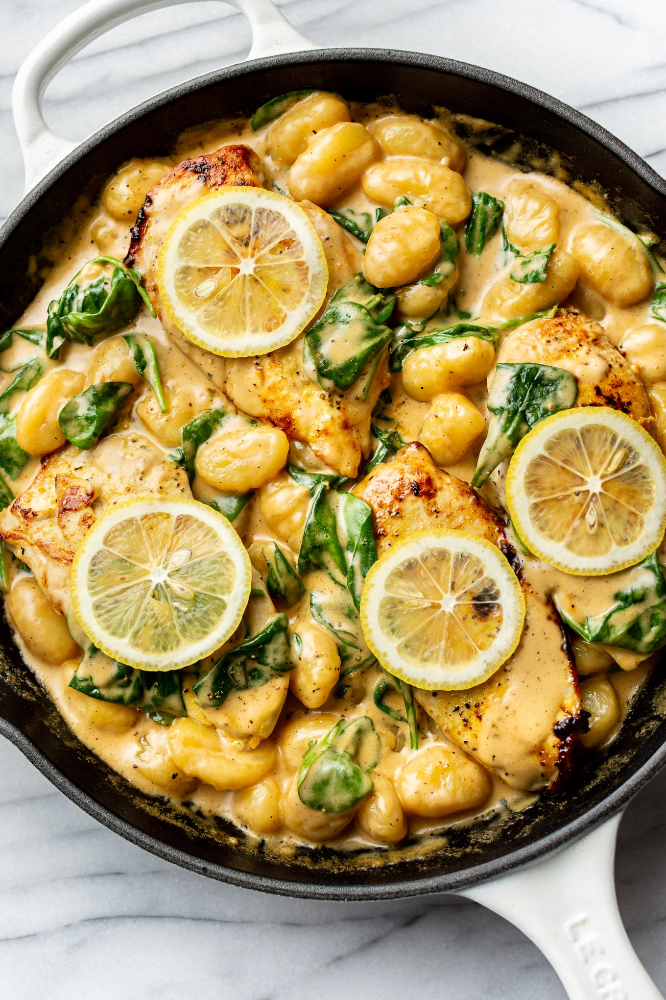

Creamy lemon and chicken gnocchi

Gnochhi cooked in a creamy lemon sauce with chicken
Ingredients
- 500g Gnocchi
- 1 Lemon
- 250ml Cream
- 500g Parmesan
- 200ml Chickenstock
- 300g Chicken
- 2x Garlic
- Paprika
- Thyme
- Salt and Pepper
- Olive oil 1tsp.
- Butter 1tsp.
- Parsley
Preparation
- Use a microplane to grate the zest of one lemon and finely mince two cloves of garlic.
- Cut the chicken and season with salt, pepper, paprika, thyme and half of the lemonzest.
- Heat a tsp. of olive oil in a pan and cook chicken over high heat, it doesnt have to be fully cooked through.
- Remove the chicken from the pan, add butter and gnocchi and cook until golden brown.
- Add garlic and lemonzest to the pan and cook for 30 more seconds.
- Add cream and chickenstock to the pan and lower the heat to medium, let simmer for 5 minutes.
- Finally add back in the chicken and the juice of one half of a lemon and simmer 2-3 more minutes before adding in the grated parmesan.
- Finish with the parsley and salt and pepper to taste.